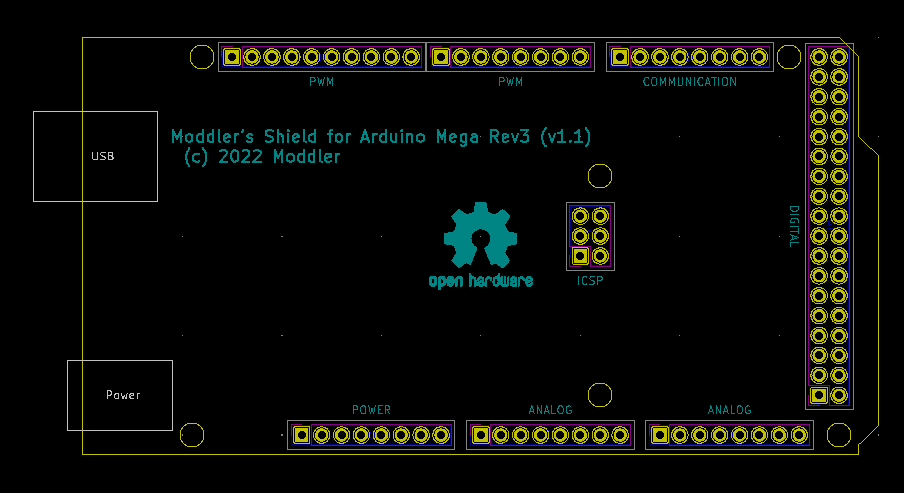

This template is a generic basis for an Arduino Mega Shield.
Outlines and socket-positions are the same as on the Arduino, so you are ready to roll for a custom-made Mega-Shield.
Keepout-areas and copper-outlines are pre-defined.
Only generic footprints are used, the PCB is 2-layered.
(c) 2022 Moddler
Moddler's Github
Moddler's Space
